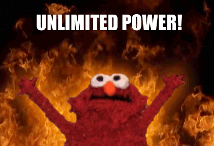

Who am I?
My name is Ngoc Tram Le, and I am currently a Banking and Finance undergraduate at Foreign Trade University (FTU), located in Hanoi, Vietnam.
Why I enrolled in CS50
My CS major friend kept venting about her bugs and null pointers and such, and I have always wanted to understand what she was complaining about. After being inspired by this article (and getting infected with Covid-19, leaving me stuck at home for 3 whole weeks with nothing to do), I finally mustered enough courage to try out a computer science course.
What kept me going
I've read a lot of CS50 reviews, all of which says CS50 is the most difficult course they've ever taken, and it took them months, even more than a year, to complete the course.
Whenever I felt like giving up, I remind myself that tons of people took this course and also found it challenging, but they managed to keep going, so why can't I?
My thoughts about CS50
Awesome! Prof David is an inspiring speaker - simplify concepts using games, activities so that even a complete newbie like me could understand. I never thought I could sit and listen attentively to a 1 1/2 hour online lecture until I enrolled in CS50.
Also, CS50's problem sets are extremely well-designed - diverse, practical (problem sets are inspired by real-world domains of biology, cryptography, finance, forensics, and gaming), fun, and challenging enough to keep me engaged (unlike some courses that just use boring quizzes). The problem sets also enable me to put stuff I learned during the lectures into practice, and motivate me to do futher research to discover what else I could do with programming.
Why I made this website
This is essentially my journal. I made this website to record my memories and reflect on lessons I've learned during my CS50 journey.
What have I gained from CS50?
- Understanding of basic CS concepts: I finally understand what my CS major friend was venting about! And I can now vent with her too :D
- The power to modify or create any programs I want (I just need to become good enough at programming): In fact, I recreated The Evolution of Trust's sandbox by Nicky Case using Python. In my opinion, if you cheated by mistake, and your opponent cheats back the next turn, you should not hold a grudge against your opponent and cheat back. You clearly started it, your opponent was simply retaliating. Therefore, I made this modification in my version, removed some strategies, and added new ones as well. 
- Communication: I've always struggled to explain my though process. Most of the time, I skip the explaination and just tell others the bottom line. Now, the comments in my codes are not just for others to read, but also for future me. I need to write comments in a way that sometime in the future, I can look at my code, understand it, and continue or improve that code. I'm still struggling with this, but it's a start.
- Newfound respect for coders: During the week when I was trying to solve Tideman, I looked more and more tattered each day. My mind was so occupied with Tideman that I didn't bother to eat or dress properly. Some nights I would lie awake for hours and suddenly woke up in the middle of the night because I just came up with a possible solution. That was just one week. And coders have to deal with Tideman every single day. Major respect.
- The fun in challenges: Seriously, despite the frustration, the pain, the tears shed, the sleepless nights, I find coding kinda fun. The thrill when I have figured out why the code does not work, and the satisfaction when it finally does are the best feelings I have ever experienced in my life.
- Problem detection and solving: I feel like a detective when I'm debugging :D The process is kinda similar: First, look for clues (print each lines/ debug50), then follow the breadcrumbs to reach the core issue, and finally, take action to resolve the issue.
- Slow and steady saves you hours of debugging: I'm an impatient and excitable person. Once I had a general idea of how my code should work, I would get right to work and code as quickly as possible to find out whether I'm correct. I onced implemented 4 complex functions in one sitting (Pset 3 - Runoff). However, the more quickly I code, the more bugs I make, and it takes me a lot of time to debug - might even more than the time it would have taken me if I code slowly and check the results of each step before moving on to another. With this in mind, whenever I realize I'm rushing and becoming careless, I would remind myself to slow down.
- Memes: CS knowledge gains me access to a new source of relatable memes. Here's some programming memes that I've found.